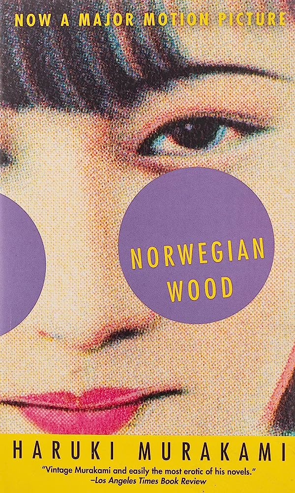

"If you only read the books that everyone else is reading, you can only think what everyone else is thinking."
"Norwegian Wood" is a novel written by Haruki Murakami that delves into the emotional complexities of its protagonist, Toru Watanabe, as he navigates the tumultuous landscape of love and loss in 1960s Tokyo. The story revolves around Toru's relationships with two very different women, Naoko and Midori, and explores themes of mental health, grief, and the search for meaning in a world marked by profound change. Murakami's lyrical prose and vivid characterizations make "Norwegian Wood" a poignant and introspective exploration of human emotions and the enduring impact of past experiences on our present lives. Learn more
"Sometimes fate is like a small sandstorm that keeps changing directions. You change direction but the sandstorm chases you."
"Kafka on the Shore" is a novel by Haruki Murakami that weaves a surreal and intricate narrative. The story follows two protagonists, a teenage boy named Kafka Tamura and an elderly man named Nakata, as their separate journeys intertwine. Kafka runs away from home in search of his long-lost mother and embarks on a mysterious adventure filled with enigmatic characters and strange occurrences. Nakata possesses the ability to communicate with cats and finds himself drawn into a quest for a lost cat and a deeper purpose in life. The novel is a mesmerizing blend of magical realism, psychological exploration, and the search for identity, offering readers a thought-provoking and unforgettable literary experience. Learn more
"The golden pavilion shone brilliantly in the darkness, not the darkness of the world but the darkness of its own inner nature."
"The Temple of the Golden Pavilion" is a novel written by Yukio Mishima, inspired by the real-life burning of the Kinkaku-ji Temple in Kyoto. The story is narrated by a young, stuttering acolyte named Mizoguchi, who becomes obsessed with the temple's unparalleled beauty and ultimately harbors a destructive urge to destroy it. The novel delves deep into Mizoguchi's psyche, exploring themes of beauty, obsession, and the dark undercurrents of human desire. Mishima's exquisite prose and psychological insight make "The Temple of the Golden Pavilion" a haunting and introspective exploration of the human psyche and the destructive forces that can arise from the pursuit of perfection. Learn more
"To a man, the greatest happiness is to be at once the creator and the creature of his own reality."
"Confessions of a Mask" is an autobiographical novel by Yukio Mishima, and it serves as a deeply introspective exploration of the inner turmoil and hidden desires of its protagonist, Kochan. The novel delves into Kochan's struggles with his own homosexuality in a highly repressive and conformist post-war Japanese society. As he grapples with his sexual identity and societal expectations, he constructs a mask of conformity and repression to conceal his true self. Mishima's narrative offers a profound examination of the complex interplay between identity, sexuality, and societal norms, making "Confessions of a Mask" a thought-provoking and psychologically rich literary work. Learn more
"People aren't overcome by situations or outside forces. Defeat comes from within."
"Kitchen" is a novel by Banana Yoshimoto that tells the story of a young woman named Mikage Sakurai who is navigating the challenges of loss and finding her place in the world. After the death of her grandmother, Mikage feels adrift, but she finds solace in the small acts of cooking and the comfort of the kitchen. The novel explores themes of grief, resilience, and the healing power of simple pleasures. Yoshimoto's prose is both tender and introspective, making "Kitchen" a poignant and heartwarming tale of personal growth and the enduring bonds of family and friendship. Learn more